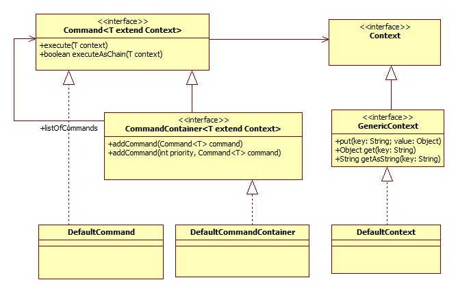

<html>

<h3>Simple command implementation</h3>

<pre>
/**
 * Simple command framework.
 * 
 * Framework for easy building software that fits the open-close-principle.
 * @author Manfred Wolff <wolff@manfred-wolff.de>
 *         (c) neusta software development
 */
</pre>

<p>The command package is a really simple way to work with commands or chains. 
To reduce the complexity of the code it is often a good way to split it up to little pieces. 
Each piece offers a part of the functionality and this pieces can be combined to chains to 
execute the logic piece by piece</p>

<p>

</p>


<p>I document the package via junit tests. The whole package comes in source code with a 100% test coverage.</p>

<pre>
	/*
	 * Simplest example. Put all commands in a container and execute it. All
	 * commands in the container will be executed in the sequence they were
	 * inserted.
	 */
	@Test
	public void testExecuteCommandsWithoutContext() throws Exception {
		CommandContainer<Context> container = new DefaultCommandContainer<Context>();
		container.addCommand(new PriorityOneTestCommand<Context>());
		container.addCommand(new PriorityTwoTestCommand<Context>());
		container.execute(DefaultContext.NULLCONTEXT);
	}

	/*
	 * Simple example. Put all commands in a container and execute it by
	 * bypassing a context. All commands in the container will be executed in
	 * the sequence they were inserted.
	 */
	@Test
	public void testExecuteCommandsWithContext() throws Exception {
		Context context = new DefaultContext();
		CommandContainer<Context> container = new DefaultCommandContainer<Context>();
		container.addCommand(new PriorityOneTestCommand<Context>());
		container.addCommand(new PriorityTwoTestCommand<Context>());
		container.execute(context);
		assertEquals("1-2-", context.getAsString("priority"));
	}

	/*
	 * Priority example. Put all commands in a container by adding a priority.
	 * All commands in the container will be executed in order of the priority.
	 */
	@Test
	public void testExecuteCommandsWithContextAndPriority() throws Exception {
		Context context = new DefaultContext();
		CommandContainer<Context> container = new DefaultCommandContainer<Context>();
		container.addCommand(3, new PriorityThreeTestCommand<Context>());
		container.addCommand(2, new PriorityOneTestCommand<Context>());
		container.addCommand(1, new PriorityTwoTestCommand<Context>());
		container.execute(context);
		assertEquals("2-1-3-", context.getAsString("priority"));
	}

	/*
	 * Composite example. You can add commands as well as command containers in
	 * a simple container.
	 */
	@Test
	public void testExecuteCommandsWithMixedContent() throws Exception {
		Context context = new DefaultContext();
		CommandContainer<Context> commandContainer = new DefaultCommandContainer<Context>();
		commandContainer.addCommand(1, new PriorityOneTestCommand<Context>());
		commandContainer.addCommand(2, new PriorityTwoTestCommand<Context>());
		commandContainer.addCommand(3, new PriorityThreeTestCommand<Context>());

		CommandContainer<Context> mixedList = new DefaultCommandContainer<Context>();
		mixedList.addCommand(new SimpleTestCommand<Context>());
		mixedList.addCommand(commandContainer);

		mixedList.execute(context);
		String priorString = context.getAsString("priority");
		assertEquals("S-1-2-3-", priorString);
	}

	/*
	 * Chain example. You can execute commands as a chain. The execution is
	 * stopped if one command returns false.
	 */
	@Test
	public void testExecuteCommandsAsChain() throws Exception {

		Context context = new DefaultContext();
		CommandContainer<Context> commandContainer = new DefaultCommandContainer<Context>();
		commandContainer.addCommand(1, new PriorityOneTestCommand<Context>());
		commandContainer.addCommand(2, new PriorityTwoTestCommand<Context>());
		commandContainer.addCommand(3, new PriorityThreeTestCommand<Context>());

		CommandContainer<Context> mixedList = new DefaultCommandContainer<Context>();
		mixedList.addCommand(1, new SimpleTestCommand<Context>());
		mixedList.addCommand(2, commandContainer);

		mixedList.executeAsChain(context);
		String priorString = context.getAsString("priority");
		assertEquals("S-A-B-C-", priorString);
	}
	
	/**
	 * You can use the builder to build and execute the chain. Usually you will
	 * use the builder together with a dependency framework just as Spring. In this
	 * case Spring instantiates the builder as well as all commands and injects all
	 * commands as a list.
	 * 
	 * &lt;bean id="firstCommand" class="de.mwolff.commons.command.PriorityOneCommand"&gt;
	 * &lt;/bean&gt;
     *
	 * &lt;bean id="secondCommand" class="de.mwolff.commons.command.PriorityTwoCommand"&gt;
	 * &lt;/bean&gt;
     *
	 * &lt;bean id="chainBuilder" class="de.mwolff.command.chainbuilder.InjectionChainBuilder"&gt;
	 *   &lt;property name="commands"&gt;
	 *     &lt;list&gt;
	 *       &lt;ref bean="firstCommand" /&gt;
	 *       &lt;ref bean="secondCommand" /&gt;
	 *     &lt;/list&gt;
	 *   &lt;/property&gt;
	 * &lt;/bean&gt;
	 */
	@Test
	public void testBuilderExample() throws Exception {
		List<Command<GenericContext>> commands = new ArrayList<Command<GenericContext>>();
		commands.add(new PriorityOneTestCommand<GenericContext>());
		commands.add(new PriorityTwoTestCommand<GenericContext>());
		InjectionChainBuilder<GenericContext> builder = new InjectionChainBuilder<GenericContext>();
		// injection usually will be done by a injection container
		builder.setCommands(commands);
		GenericContext context = new DefaultContext();
		builder.executeAsChain(context);
		String priorString = context.getAsString("priority");
		assertEquals("A-B-", priorString);
	}

</pre>